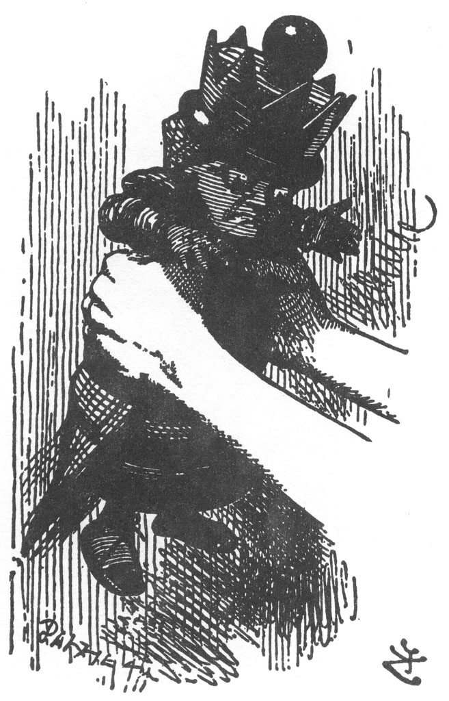

Bir yandan konuşuyor, bir yandan da onu masadan almış, var gücüyle öne arkaya silkeliyordu.
Kızıl Kraliçe, hiçbir direnç göstermiyordu; sadece yüzü ufalmış, gözleri irileşip yemyeşil olmuştu: Alice onu silkelemeye devam ettikçe, Kızıl Kraliçe gittikçe kısaldı ve tombullaştı... ve yumuşacık oldu... ve yuvarlaklaştı... ve...
